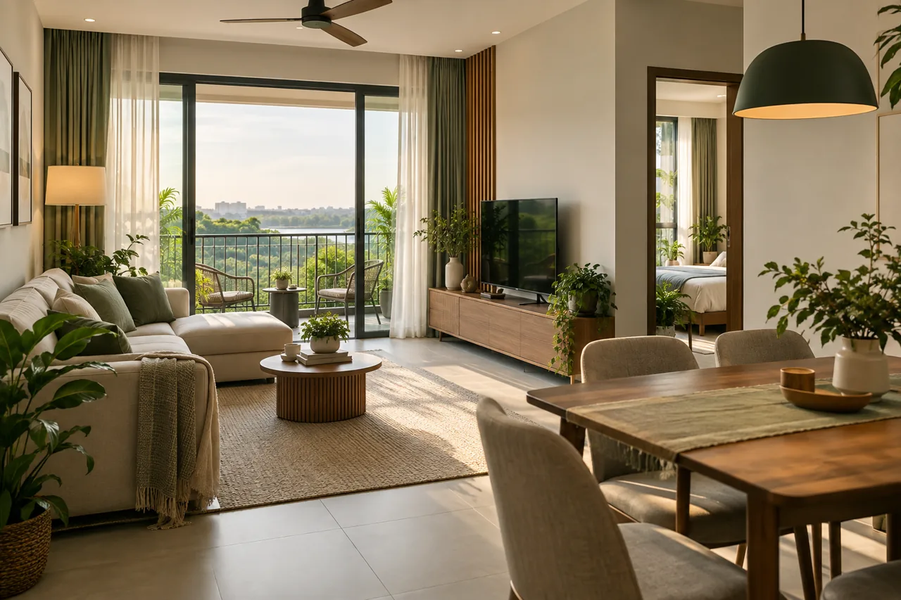
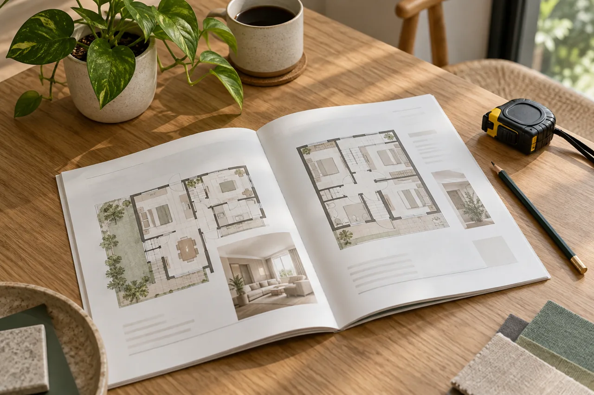
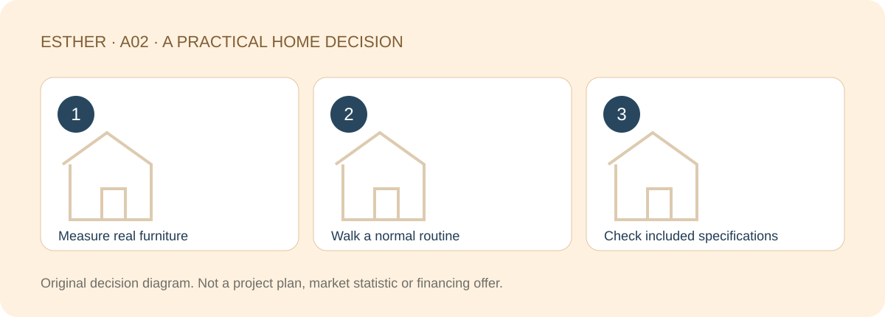

A HOME THAT FITS YOUR LIFE
Beyond the Show Unit: What to Check Before Buying a JB Home
Sources checked：2026-10-26 · By Esther, Real Estate Negotiator

Direct answer
A show unit is a useful visual aid, but comfortable living depends on the actual layout, your furniture and the specifications you are buying. For an RM800K–RM1.2M search, use your own routines to test the home rather than treating attractive styling as proof of value. The budget range is a discussion frame, not a project quotation.
Browse article sections
Bring your furniture back into the picture
Note the dimensions of the bed, wardrobe, dining table, fridge and work desk you actually expect to use. Place them on a dimensioned plan. A room can feel generous when the display leaves out a desk or uses furniture unlike yours. Do not estimate room size from a photograph.
Check what happens when wardrobe doors, drawers and the bedroom door are open. A bed fitting into a room does not mean both sides remain easy to use. Ask for missing dimensions and record them as unconfirmed until supplied, rather than guessing.

Separate showroom lighting from the actual unit
Confirm whether the display represents your selected orientation, floor, windows and nearby surroundings. Bright artificial lighting cannot establish how the home will feel in daylight. For an unbuilt unit, plans and known surroundings allow an assessment, not a measured result.
Where an actual unit can safely be viewed with permission, look at light, opening windows, noise and odours under relevant conditions. State your priorities clearly: a workable kitchen, a quiet sleep space or less afternoon heat. No single orientation is automatically right for every household.
Walk through three ordinary moments
| Routine | Try this | Record |
|---|---|---|
| Arriving with groceries | Car park to lift, entrance to kitchen | Access, turns and shelter |
| Two people leaving together | Bathroom, wardrobe and entrance routes | Doors and bottlenecks |
| Working or caring for a child | Desk, plugs, kitchen and resting area | Noise, sight lines and storage |
If parking allocation or lift access has not been finalised, mark it as pending. A route shown on a model is not proof of completed access. Include awkward everyday objects such as a stroller, luggage and cleaning equipment; they need a home too.

Create separate “displayed” and “included” columns
Ask which flooring, kitchen fittings, wardrobes, air-conditioning, appliances, lights and smart devices are included in the applicable purchase documents or formal package. Get the quantities and conditions in writing. An attractive display wall is not an agreed handover item simply because it is in the room.
KPKT TEDUH is a starting point for relevant developer and permit checks, not a quality guarantee. KPKT’s completion and possession explanation provides document context; a showroom visit is not an inspection of the completed home.
Rehearse dinner, not just the viewing
Imagine one person cooking while another puts groceries away, followed by an evening work call. If those routines compete for the same route, record the conflict and check dimensions. Do not make the plan pass by removing furniture you genuinely need. This is an illustrative exercise, not a report about a project or client.
Record the hardest compromise before the nicest feature
After each visit, write one strength, one difficult-to-change compromise and one unanswered question. Compare structural layout and window positions before decorative finishes that may be replaced. You do not need a perfect home, but you should know what you are accepting.
Use the same furniture and routines at the next viewing. Otherwise, every showroom invites you to change your criteria. A clear comparison is more valuable than a score based on how impressive the display feels on the day.
Explore a project only if the basic fit matches
If Kebun Teh and condo living already suit your search, the existing The Celestz page is one place to investigate actual plans and specifications. This does not confirm a price match, 2+1 availability, stock, access suitability or management performance. Check the exact unit and documents first.
Investigate The Celestz specifications ↗Frequently asked questions
Is the displayed area the space I can actually use?
Check the plan, area definition and selected unit. Furniture, circulation, balconies and other components affect how the space works.
Are displayed appliances included?
Not necessarily. Match each item to written specifications and the formal package, including quantity and conditions.
Can daylight be confirmed before construction finishes?
Plans and surroundings support an assessment, not a measured claim about an actual completed unit.
Is a three-bedroom layout always better?
No. Compare room dimensions, circulation, storage and the jobs each space needs to do.
Compare actual specifications and suitable layouts
Share the part of your home search you want to clarify, your budget range and a suitable time to chat. A viewing or appointment is confirmed only after arrangements are agreed.
Discuss my home search with EstherThe editable message identifies this guide. Nothing is sent until you choose to send it. No identity or financial documents are needed in an initial chat.Sources and scope
- KPKT TEDUH — Developer licence and sales-permit checks
- JPN / KPKT — Panduan Pembeli Rumah (22 April 2021), official LPHS copy
Checked：2026-10-26。Practical comparisons and checklists are original editorial guidance, not market statistics, a professional inspection or personalised legal, tax or financing advice. Project details and transaction-specific requirements need separate verification. Historical source dates do not establish a new policy announcement. No loan approval, rental, appreciation, search ranking or AI citation is guaranteed.